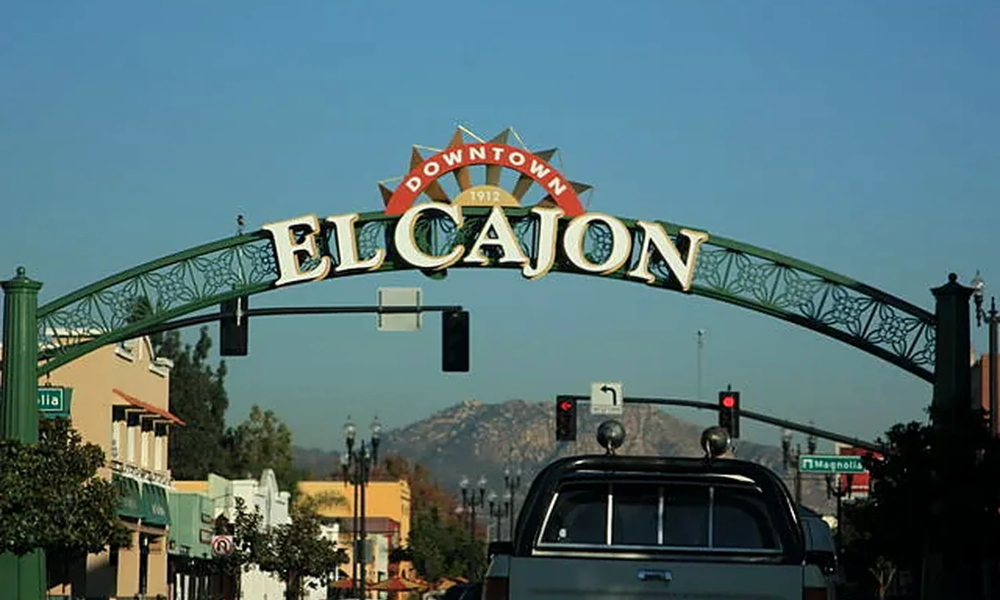

ADELIE Construction · El Cajon
El Cajon Remodeling: Records, PACO & Site Connections
El Cajon’s Project Assistance Center Online, known as PACO, supports permit and plan submissions, payment and inspection requests. The City also provides public-record and mapping resources. Use those tools together when an addition or remodel needs to connect to existing construction whose history is unclear.
Reconcile the house with finalized permits
El Cajon’s contractor resources identify finalized permits and improvement plans among searchable records. Compare those records with the spaces to be remodeled. An older patio enclosure or changed garage deserves a documented question before it is treated as a straightforward room in a new proposal.
Local reference: El Cajon Contractor Resources and PACO.
Check whether work extends into Engineering’s scope
The City separates Building from Engineering responsibilities such as grading, right-of-way work and sewer-lateral matters. A bathroom remodel may be internal, but a drainage or sewer improvement can extend beyond the room. Draw the intended route and ask the appropriate division what review is needed.
Local reference: El Cajon Contractor Resources and PACO.
Keep comfort improvements in the initial design
When opening walls or ceilings, decide whether the scope also includes insulation, duct routes or revised equipment. Coordinate the location of grilles and returns with new cabinets and lighting. Pricing those decisions before drywall avoids a finished room that still has the comfort problem that prompted the renovation.

Bring these details to the first project conversation
- Available finalized permit records for the affected spaces
- Existing and proposed utility routes
- Any work proposed near the sidewalk or street
- A list of ventilation and comfort problems to solve while surfaces are open
Use this list to prepare for a discussion with ADELIE. Site conditions and the responsible permitting authority determine the final scope.
Are all El Cajon project questions handled by Building?
No. The City’s resource page distinguishes Building, Planning and Engineering responsibilities. Use the scope to identify the right contact, particularly for grading or work in the public right-of-way.
El Cajon planning resources
Official references checked October 24, 2026. Follow the linked authority for current requirements. Planning examples on this page describe options to evaluate; they are not completed ADELIE projects or property-specific approvals.
Develop the scope for your home
Your El Cajon Project
Start with the property and the problem you want to solve.
Share your address, the rooms or outdoor areas involved, and any plans or permit information you already have. We will discuss project fit, available scope and next steps.
Request a Consultation